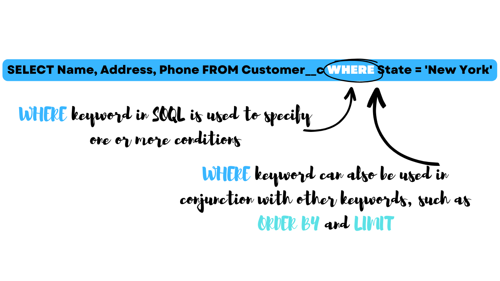

SOQL (Salesforce Object Query Language) is a powerful querying language that allows users to retrieve and manipulate data from Salesforce databases. It is designed to work with Salesforce's multi-tenant architecture and can be used to query one or more objects.
Why SOQL?
With SOQL, you can retrieve a specific set of data, filter results based on certain criteria, and sort the results returned by the query
You can also use SOQL to traverse objects and fetch data from related objects.SOQL is similar in syntax to SQL (Structured Query Language), But there are some differences.
For example, SOQL is tailored to work specifically with Salesforce data and objects. It includes special keywords and functions that allow users to take full advantage of Salesforce's data model and relationships between objects.
Developers and administrators who work with Salesforce use SOQL extensively to create custom reports, dashboards, and list views.
They can also use SOQL to build custom integrations and automate business processes.Learning SOQL is essential for anyone who wants to take their Salesforce skills to the next level. Whether you are a beginner or an experienced Salesforce user, mastering SOQL will enable you to work more efficiently and effectively with your Salesforce data.
If you're new to Salesforce and SOQL, writing your first query can be intimidating. But don't worry, with a few simple steps, you can write your first SOQL query in no time
The SELECT statement is a fundamental component of SOQL. It is used to retrieve specific fields from one or more Salesforce objects. The SELECT statement is similar to the SELECT statement in SQL, but with some important differences.
To use the SELECT statement in SOQL, you must first specify the object you want to query. For example, if you want to retrieve data from the Account object, your query would start with "SELECT" followed by the fields you want to retrieve and the object you want to retrieve them from. For example, the following query retrieves the Account Name and Account Owner fields from the Account object:
You can also use the SELECT statement to retrieve fields from related objects. For example, if you want to retrieve the Contact Name and Account Name for all contacts associated with an account, you can use a parent-child subquery. The following query retrieves the Contact Name and Account Name fields for all contacts associated with the "ABC Company" account:
In this query, the parent object is the Account object and the child object is the Contact object. The subquery retrieves the Contact Name and Account Name fields from the Contacts object and the Account object, respectively.The SELECT statement is a powerful tool for retrieving specific data from Salesforce objects. By using the SELECT statement in conjunction with other SOQL keywords and functions, you can retrieve, filter, and manipulate data to meet your specific business needs.
SOQL (Salesforce Object Query Language) is a powerful tool that allows developers to retrieve data from Salesforce databases. One of the key features of SOQL is the ability to use the WHERE keyword to filter the data returned by a query.
The WHERE keyword in SOQL is used to specify one or more conditions that must be met in order for a record to be returned by the query. These conditions can be simple or complex and can involve multiple fields and operators.
For example, suppose you have a Salesforce database containing information about customers, including their names, addresses, and phone numbers. You could use the following SOQL query to retrieve all of the customers who live in New York:
In this example, the WHERE keyword is used to specify the condition that the State field must be equal to 'New York' in order for a record to be returned. The query will only return records that meet this condition.The WHERE keyword can also be used in conjunction with other keywords, such as ORDER BY and LIMIT, to further refine the results of a query. For example, you could modify the previous query to return only the first 10 customers who live in New York and are sorted by their last name:
In this modified query, the ORDER BY keyword is used to sort the results by the LastName field, and the LIMIT keyword is used to limit the number of results to 10.In conclusion, the WHERE keyword is a powerful tool in SOQL that allows developers to retrieve only the data they need from Salesforce databases. By specifying one or more conditions, developers can filter the results of a query to meet their specific needs. However, it is important to use the WHERE keyword correctly and with care to avoid unintended consequences and ensure the integrity of the data returned by the query.
Logical operators are essential components in Salesforce Object Query Language (SOQL) that allow developers to retrieve specific data from Salesforce databases. There are three logical operators in SOQL: AND, OR, and NOT.
The AND operator in SOQL is used to retrieve records that satisfy multiple conditions. For example, if you want to retrieve all accounts that have an annual revenue of more than $1 million and are located in the United States, you can use the following SOQL query:

In SOQL, null values can be used in filters and can be checked with comparison operators such as =, !=, <, >, <=, >=. When filtering for null values, the IS NULL operator is used. For example, the following SOQL query retrieves all contacts without an email address:
This query will return all contacts where the Email field has a null value.It is important to note that null values are not the same as empty or blank values.
An empty or blank value is a value that has no characters or data, whereas a null value is a value that does not exist. When querying data in SOQL, it is essential to differentiate between null values and empty or blank values, as the results returned by a query can vary significantly.In some cases, null values can cause errors in SOQL. For example, if a query attempts to access a null value in a field, an error may occur. To avoid these errors, developers can use the IFNULL() function to replace null values with a specified default value. For example, the following SOQL query retrieves all accounts and replaces null values in the Industry field with the default value "Not Specified":
In conclusion, null values in SOQL indicate the absence of a value in a field and can impact the results of a query. Developers must understand how to use null values in filters and comparison operators and differentiate between null values and empty or blank values to ensure the accuracy and integrity of their data. By using the IFNULL() function, developers can handle null values and avoid errors in their SOQL queries.
LIKE operator is used to filter records based on a pattern that matches a specified string. The LIKE operator is similar to the SQL LIKE operator and allows developers to retrieve records that contain a specific pattern in a particular field.
The syntax for using the LIKE operator in SOQL is as follows:
This query will retrieve all contacts whose first name starts with the letter "J", such as "John", "Jane", and "James"
.In addition to the percent sign and underscore, the LIKE operator in SOQL supports the ESCAPE keyword. The ESCAPE keyword allows developers to search for strings that contain the percent sign or underscore characters as literal characters, rather than as wildcards.For example, the following SOQL query retrieves all accounts whose name contains the string "100%":
In this query, the ESCAPE keyword is used with the exclamation mark (!) character to indicate that the percent sign (%) character should be treated as a literal character, rather than as a wildcard. The query will retrieve all accounts whose name contains the string "100%", such as "Acme Corporation 100% Satisfaction Guaranteed".In conclusion, the LIKE operator in SOQL is a powerful tool for filtering records based on a pattern that matches a specified string. By using the percent sign and underscore wildcards, as well as the ESCAPE keyword, developers can create complex queries that retrieve the precise data they need from Salesforce databases.
The LIMIT clause is used to limit the number of records returned by a SOQL query. Here's the syntax for using LIMIT in a SOQL query:
In the LIMIT clause, you specify the maximum number of records to return, where n is a positive integer.
The LIMIT clause is optional, and if you don't specify a limit, Salesforce will return up to 2,000 records by default.
It's important to note that the LIMIT clause only limits the number of records returned by the query, not the number of records evaluated by the query.
For example, if your query includes a filter that matches a large number of records, the query may still hit Salesforce's governor limits, even if you've specified a LIMIT clause.Here's an example of a SOQL query that includes a LIMIT clause
This query would return up to 10 accounts created after January 1, 2022, sorted by their created date.I hope this information is helpful! Let me know if you have any other questions.
ORDER BY clause is used to sort the results of a query in ascending or descending order based on one or more fields. The basic syntax for using ORDER BY in SOQL is as follows:
This query selects the Name and Industry fields from the Account object and orders the results in ascending order by the Industry field. You can replace ASC with DESC to order the results in descending order instead.
OFFSET clause to skip a specified number of records before returning the remaining records. This is useful when you want to implement pagination in your application or if you only want to retrieve a subset of the query results.
Here's the syntax for using OFFSET in a SOQL query:
In this query, the OFFSET clause comes after the LIMIT clause. The row_count specifies the maximum number of records to return, and the offset_count specifies the number of records to skip before starting to return records.For example, if you wanted to retrieve the next 10 contacts in your Salesforce org after skipping the first 20 contacts, you could use the following SOQL query:
In this query, the OFFSET clause comes after the LIMIT clause. The row_count specifies the maximum number of records to return, and the offset_count specifies the number of records to skip before starting to return records.For example, if you wanted to retrieve the next 10 contacts in your Salesforce org after skipping the first 20 contacts, you could use the following SOQL query:
The GROUP BY clause is used in a SOQL query to group the query results based on one or more fields. This is useful when you want to aggregate data and perform calculations on subsets of records that share a common value in one or more fields.
Here's the syntax for using GROUP BY in a SOQL query:
In the GROUP BY clause, you specify the field(s) to use for grouping, separated by commas.
You can also include aggregate functions (such as COUNT(), SUM(), AVG(), MIN(), or MAX()) to perform calculations on the grouped data.For example, let's say you wanted to retrieve the total number of opportunities and the total amount for each stage in your Salesforce org. You could use the following SOQL query:
This query would group the opportunities by their stage name and return the count of opportunities and the sum of their amount for each stage.Note that when using GROUP BY, you can only select fields that are specified in the GROUP BY clause or in an aggregate function. Additionally, you cannot use certain clauses (such as HAVING, LIMIT, or OFFSET) with GROUP BY.
Aggregate functions in SOQL (Salesforce Object Query Language) allow you to perform calculations on your data and return summary results.
 AVG(): This function returns the average value of the specified field in a query.
AVG(): This function returns the average value of the specified field in a query.
created with
Website Builder Software .